Sky House
A three-bedroom Camden penthouse organised as two rooftop pavilions — living to the south, sleeping to the north — with yellow-pigmented skylights at the thresholds.
Two pavilions on a roof.
The starting point was a penthouse with city views in every direction and almost no logic to the plan. The brief was a three-bedroom home that took the roof seriously: somewhere to sit out under the sky, and somewhere quieter to retreat to.
The plan splits into two rooftop pavilions. The southern pavilion holds the living and dining rooms, takes the solar gain and looks across the city to the Heathrow flight path. The northern pavilion is calmer — bedrooms and a small terrace, walled in brick, more enclosed.
Between them sit the thresholds — the entrance lobby and a small home office — both lit by skylights with an added yellow pigment, so the light reads warm as you pass through and cooler when you arrive. Cross-ventilation is built into the plan; every room has a rooflight.
Grand Designs Award, Best Redesign, 2009.
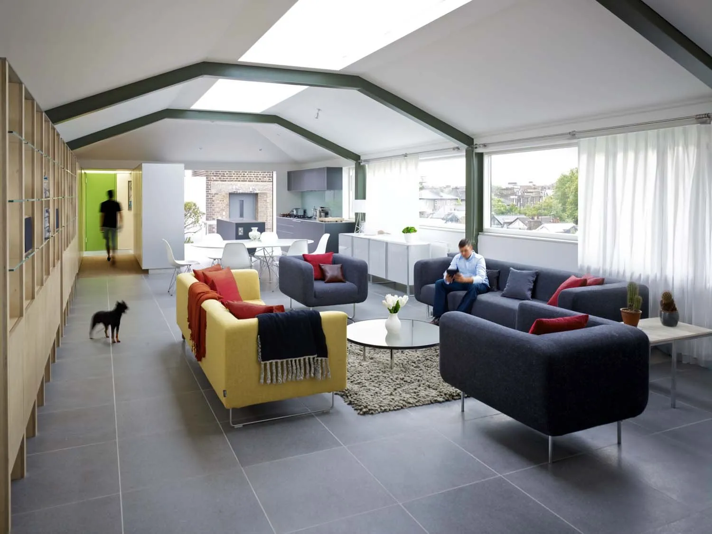
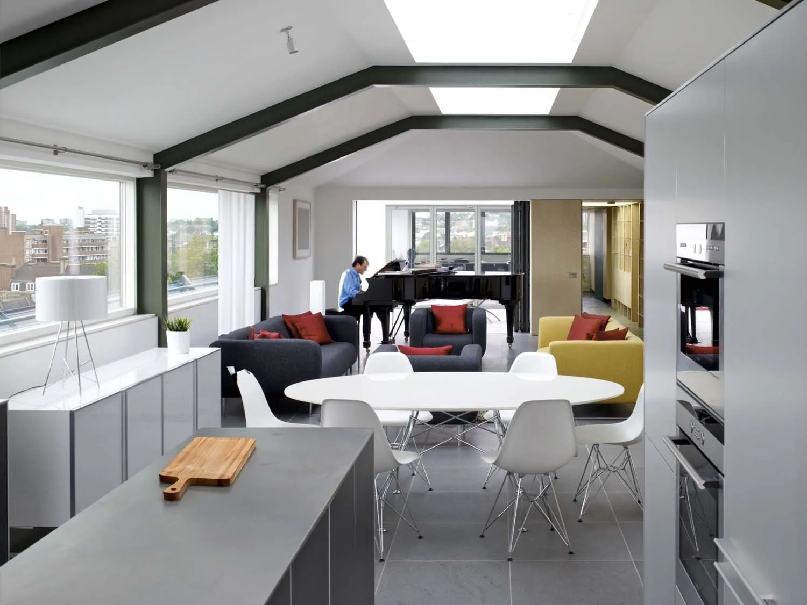
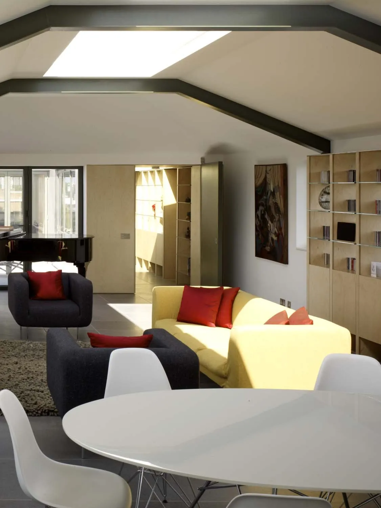
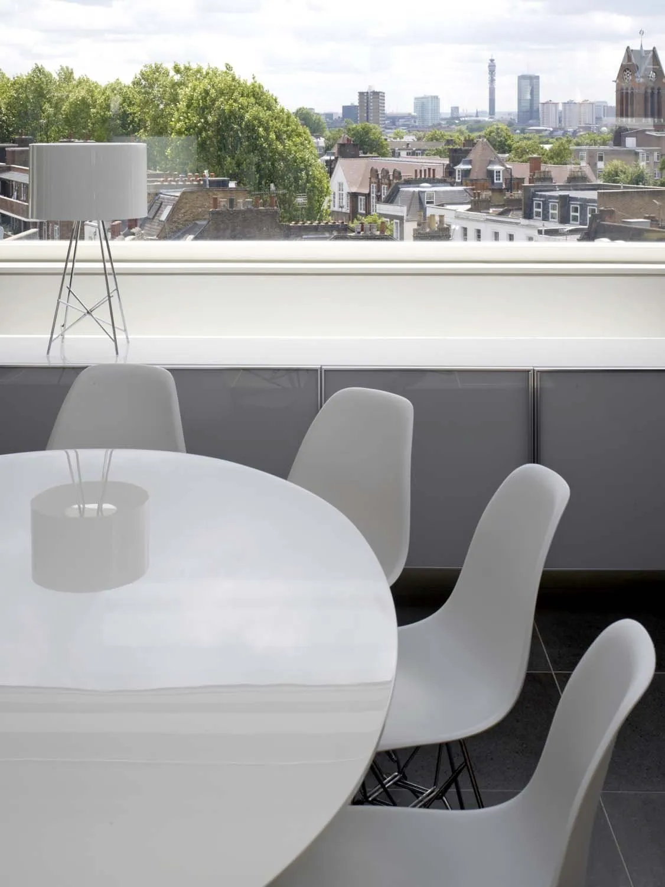

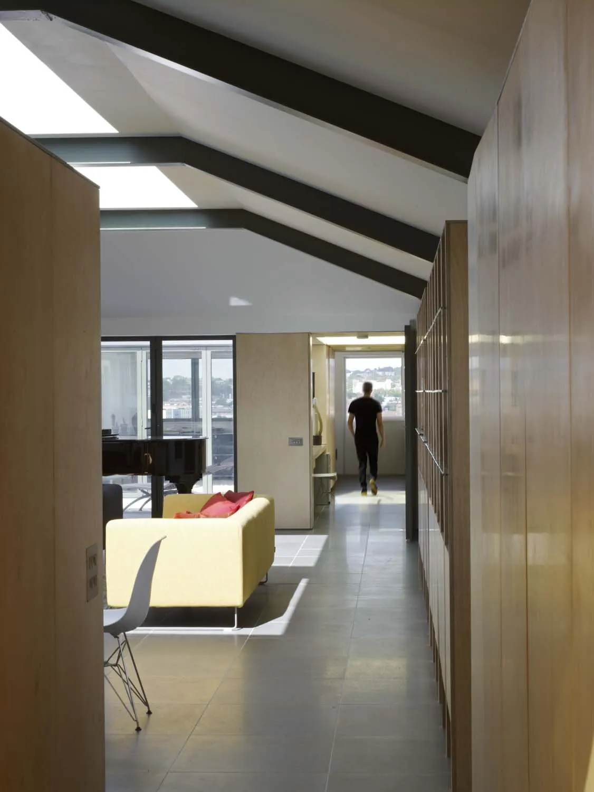
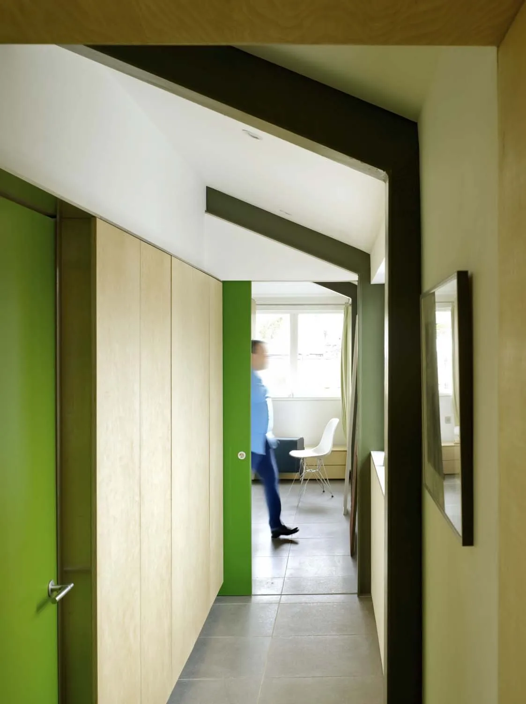
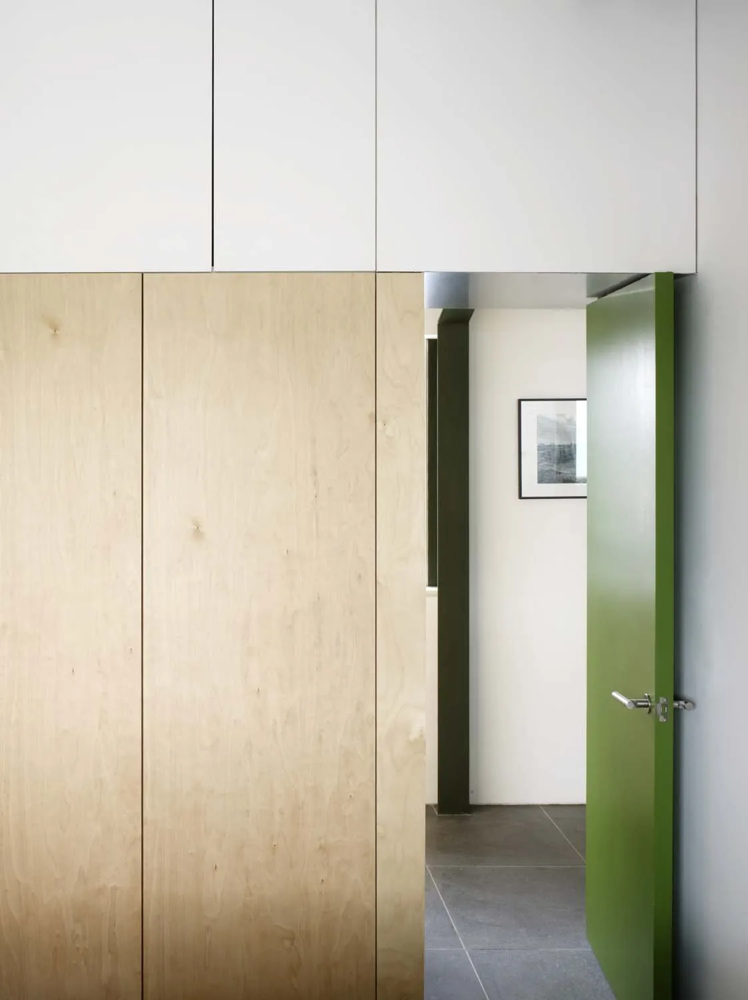
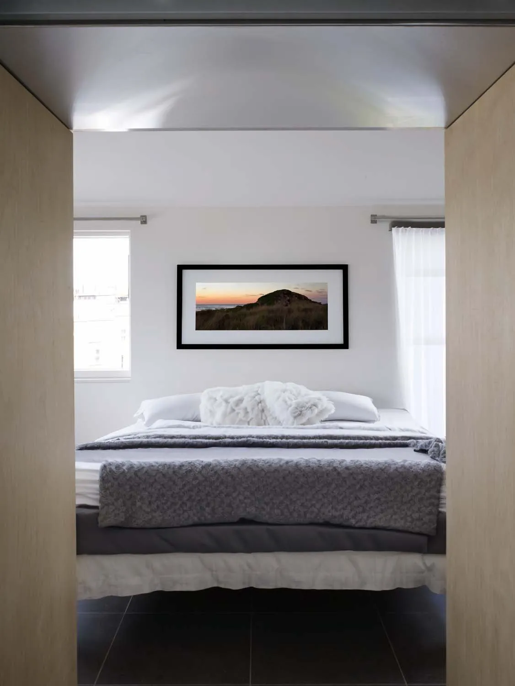
"Opening up the view and getting so much light in transforms each and every room. It's the perfect home."
Philip Jones, client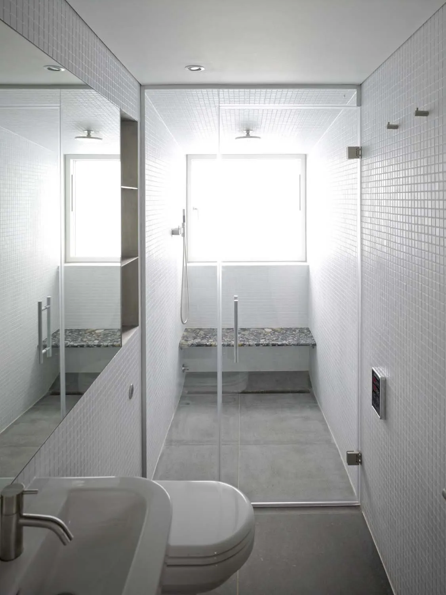
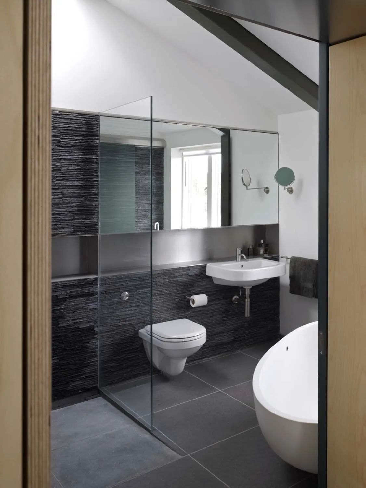
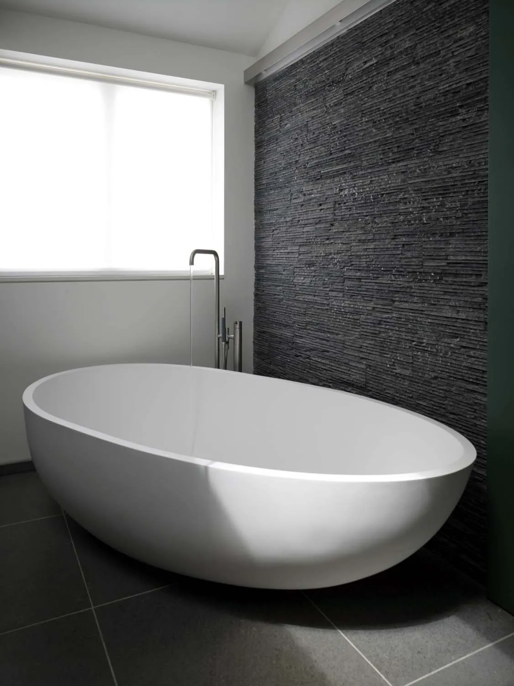
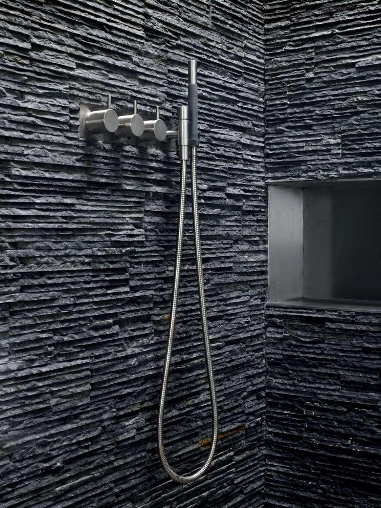
What it's made of.
Sky House, Camden — materials, all on one surface.

- Forest-green painted structural steel Signature exposed coloured roof trusses
- Pale natural European oak shelving veneer Full-height bookcase walls
- Yellow-pigmented cast acrylic panel Signature yellow-pigmented skylight
- Frameless clear float glass Picture-window glazing
- Split-face dark charcoal slate Bathroom feature wall
- Warm-white matt plaster Ceilings
- Honed mid-grey porcelain floor tile Open-plan floor
- Light grey matt-lacquered MDF Kitchen joinery

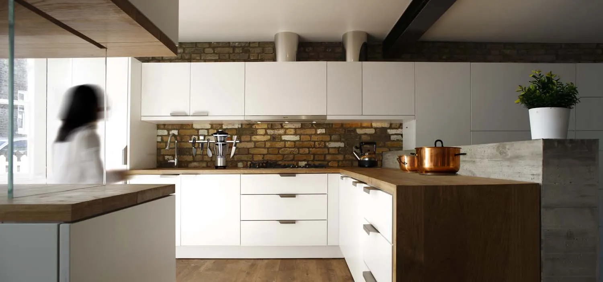